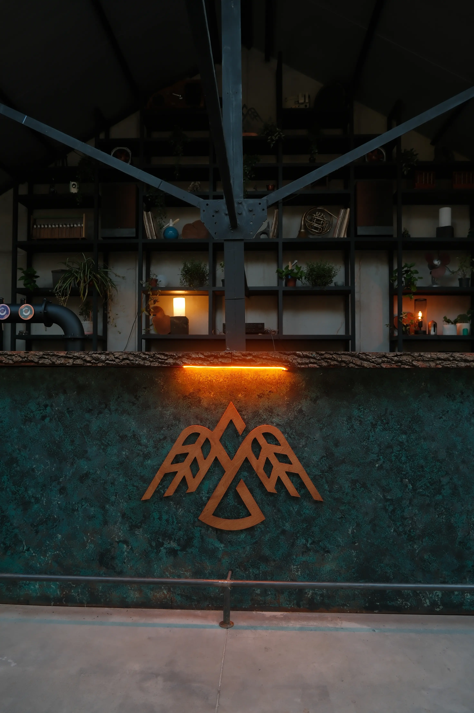
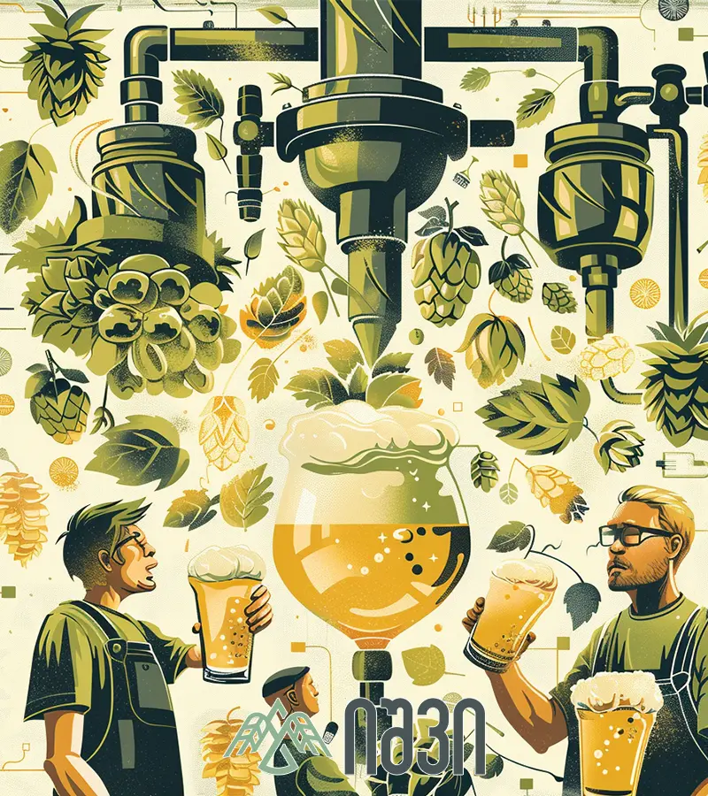

თბილისის გულში შექმნილი კრაფტ ლუდსახარში. შექმნილი მათთვის, ვინც პატივს სცემს ტრადიციას და ეძებს სიახლეს.
ეს ნიშნავს ხელახალ დაბადებას. როგორც ლუდის დალევისას მიღებული ხელახალი დაბადების შეგრძნება. ჩვენთვის ეს სიტყვა მხოლოდ სახელწოდება არ არის - ეს არის იდეის დაბადება, რომელიც კრაფტ კულტურას ცვლის.
იშვი არ დაწყებულა კითხვით „რამდენი ლუდი გავყიდოთ“. ISHVI დაიწყო კითხვით - როგორი უნდა იყოს ლუდი, რომელსაც სიამოვნებით დალევ? ჩვენთვის ლუდი არ არის უბრალოდ პროდუქტი. ეს არის მაღალტექნოლოგიური პროცესი, დრო და პასუხისმგებლობა.
ჩვენ გვჯერა, რომ კარგი გემო არ იქმნება სიჩქარეში. ის ყალიბდება სწორად შერჩეული ინგრედიენტებით - ალაოსგან, სვიისგან, წყლისგან და რაც ყველაზე მთავარია: ტექნოლოგიური სიზუსტით და მოთმინებით.
იშვი არ არის მასობრივი ლუდი და არც ცდილობს იყოს. ჩვენ ვაკეთებთ ლუდს მათთვის, ვინც მას აფასებს.

საქართველო ღვინის სამშობლოა, თუმცა ლუდის ხარშვის ტრადიცია მთაში საუკუნეებს ითვლის. ჩვენ ამ უძველეს მეთოდებს თანამედროვე Craft ტექნოლოგიებს ვუთავსებთ.
ჩვენ ვქმნით პროდუქტს, რომელსაც ლოკალურ ბაზარზე ანალოგი არ ჰყავს. ეს არის საერთაშორისო ხარისხისა და ქართული ხასიათის სინთეზი — ლუდი, რომელიც არ იმეორებს სხვას.

ხელნაკეთი ხარისხი, ინდუსტრიული სტანდარტის ნაცვლად!
დღეს ლუდი არის კულტურა, რომელიც აერთიანებს ადამიანებს, იდეებს და ისტორიებს ერთი მაგიდის გარშემო.
იშვი სწორედ ამ ფილოსოფიის მატარებელია. ეს ნიშნავს ხელახალ დაბადებას. როგორც ლუდის დალევისას მიღებული ხელახალი დაბადების შეგრძნება. ეს არის დაბრუნება ფესვებთან, მაგრამ თანამედროვე ხედვით. პატივისცემა ისტორიის მიმართ და სიმამაცე ახალი გემოების შესაქმნელად.
ჩვენ პატივს ვცემთ ბავარიულ სიზუსტეს, ჩეხურ კულტურას, ბრიტანულ ტრადიციებსა და ამერიკულ თავხედობას, მაგრამ ამ ყველაფერს ჩვენს, ქართულ სულს ვურევთ. ISHVI არის ადგილი, სადაც მსოფლიო კრაფტ ლუდის კულტურა ახალ ისტორიას იწყებს. ჩვენი ლუდი არ იხარშება მასობრივი წარმოებისთვუის - ის იხარშება იმ ადამიანებისთვის, ვინც აფასებს ავთენტურობას და ეძებს ისტორიას თითოეულ ჭიქაში.
საიტის დასათვალიერებლად თქვენ უნდა იყოთ სრულწლოვანი. / You must be of legal drinking age to view this site.